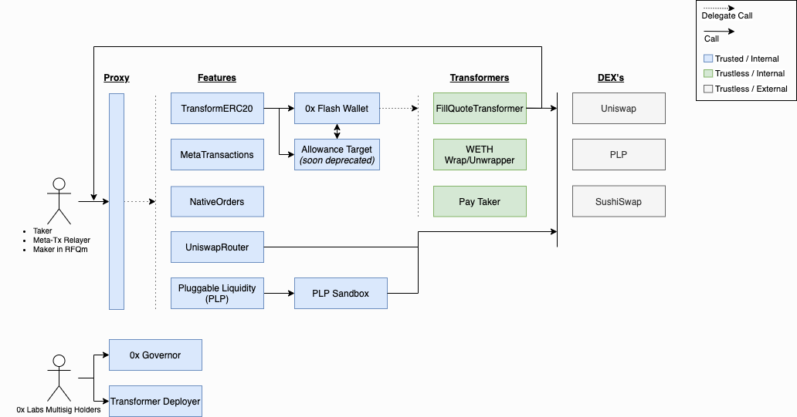

Overview
The ZeroEx (Exchange Proxy) contract implements a delegate-call proxy pattern to create a system of composable smart contracts. This architecture enables 0x Protocol to innovate with minimal friction alongside the growing DeFi ecosystem.
The diagram below illustrates our system (click to enlarge).
{kind=link}

The table below defines our smart contract nomenclature.
Term |
Definition |
The point of entry into the system. This contract delegate-calls into Features. |
|
These contracts implement the core feature set of the 0x Protocol. They are trusted with user allowances and permissioned by the 0x Governor. |
|
These contracts extend the core protocol. They are trustless and permissioned by the Transformer Deployer. |
|
The Flash Wallet is a sandboxed escrow contract that holds funds for Transformers to operate on. For example, the |
|
A smart contract that governs trusted contracts in the system: Proxy, Features, Flash Wallet. |
|
PLP liquidity providers are called from this sandbox. |